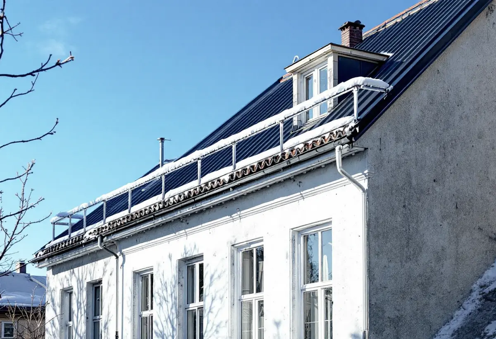

Platsbesök
Gratis besök på taket och vinden med styrelsen.
Nästan alla hus i Vasastan ägs av bostadsrättsföreningar eller hyresvärdar. När taket ska bytas är det föreningen som bär ansvaret enligt plan- och bygglagen, inte entreprenören. Geal Entreprenad AB byter tak på flerbostadshus och hjälper styrelsen att få ordning på handlingarna.
Stadens områdesfakta för 2025 redovisar Vasastan i församlingsområdena Gustav Vasa, Västra Matteus och Östra Matteus. Tillsammans har de drygt 20 000 bostadsrätter i flerbostadshus, omkring 6 500 lägenheter hos privata hyresvärdar och ungefär 1 200 hos allmännyttan. Småhus finns det nästan inga.
Ett takbyte i Vasastan beställs alltså av en förening eller en hyresvärd. För styrelsen är takbytet ofta det största projektet på många år, och det kommer med en roll som inte alla styrelseledamöter känner till: byggherrens.
Boverket beskriver byggherren som den som för egen räkning utför eller låter utföra byggnads- eller rivningsarbeten, och skriver att det kan vara en juridisk person som en bostadsrättsförening. Byggherren har det yttersta ansvaret för att byggnaden uppfyller bestämmelserna och att rätt kompetens finns med.
När en åtgärd kräver lov eller anmälan ska byggherren bland annat se till att arbetet inte börjar före startbesked, att det kontrolleras enligt kontrollplanen och att det inte tas i bruk utan slutbesked. Kräver takbytet inget lov gäller ändå kraven på utformning, tekniska egenskaper, varsamhet och underhåll.
Boverket skiljer på rollerna. Byggherre är ett begrepp i plan- och bygglagen och gäller förhållandet mellan föreningen och samhället. I avtalet med entreprenören kallas föreningen i stället ofta beställare. De offentligrättsliga kraven kan inte förhandlas bort, medan mycket i avtalet går att komma överens om.
För styrelsen betyder det att ansvaret för lov och kontroller ligger kvar hos föreningen även när en entreprenör gör jobbet. Vi tar fram kontrollpunkter och dokumentation för taket, så att styrelsen kan visa vad som är gjort.
Stockholms stad räknar byte av material eller kulör på taket som en fasadändring, och på ett flerbostadshus krävs bygglov när taket vetter mot allmän plats. Inom ett riksintresse för kulturmiljövården, ett särskilt värdefullt område eller på blå- och grönklassade hus krävs bygglov även för det som annars är lovfritt.
Den klassiska stenstaden från 1870–1930 breder enligt stadens redovisning av riksintressena ut sig över bland annat Norrmalm, där Vasastaden ingår, och kännetecknas av sluttande, oftast plåttäckta tak. Vi slår upp huset i Stadsmuseets klassificeringskarta innan föreningen väljer material.
Stadens redovisning av riksintressena skriver att stenstaden kan fortsätta att utvecklas genom mer begränsade förändringar, som vindsinredningar, och att sådana prövas enligt varsamhetskraven i plan- och bygglagen. Stadsbyggnadskontorets vägledningar för vindsinredningar och balkonger utgör underlag för prövningen.
Funderar föreningen på att inreda vinden är det klokt att bestämma det innan taket byts, eftersom takkupor, takfönster och isolering påverkar hur det nya taket byggs. Ska vinden inte inredas byter vi taket så att det går att göra senare.

Gratis besök på taket och vinden med styrelsen.
Vem är byggherre, beställare och kontaktperson?
Klassning, material och om bygglov eller anmälan krävs.
Ställning och tillstånd för gatan.
Rivning, underlag och nytt tak.
Kontroller och underlag till föreningen.
Skatteverket ger rotavdrag i en bostadsrätt bara för arbete inne i bostaden som du ansvarar för enligt stadgarna. Arbete på gemensamma delar som tak och fasader ger inget rotavdrag, varken för föreningen eller för de boende.
Ett takbyte på ett flerbostadshus betalas därför av föreningen eller hyresvärden utan avdrag, och kostnadsförslaget ställs till den som äger huset.
Takets yta och form, antalet kupor, skorstenar och huvar, underlagets skick, ställningens storlek och om bygglov och handlingar behövs. En överblick finns i vad kostar ett takbyte. Efter ett gratis platsbesök får föreningen ett skriftligt kostnadsförslag.
Byte av tegel-, betong- och plåttak.
Takbyte →Takbyte, takbesiktning och plåtarbeten.
Takläggare i Vasastan →Stenstad, Röda Bergen och föreningarnas tak.
Takrenovering i Vasastan →Flytta badrummet, ny stam och frånluft.
Badrumsrenovering i Vasastan →När en lokal blir bostad.
Byggföretag i Vasastan →Fasadmålning för föreningar.
Fasadmålning i Vasastan →Ställning, tillstånd och etablering på gatan.
Fasadrenovering i Vasastan →Storgårdskvarteren och 20-talets fönster.
Fönsterbyte i Vasastan →Fönster i Birkastadens jugendhus.
Fönsterrenovering i Vasastan →Springor, kupning och underhåll.
Golvläggare i Vasastan →Stav- och fiskbensparkett.
Golvslipning i Vasastan →Kokvrån som blir kök.
Köksrenovering i Vasastan →Snickerier, fönster och sprucket spackel.
Målare i Vasastan →Takfönster, vindar och plåt.
Plåtslagare i Vasastan →Öppna upp, nya dörröppningar och listverk.
Snickare i Vasastan →Ny tapet på gamla putsväggar.
Tapetsering i Vasastan →Hela lägenheten, med husets värden kvar.
Totalrenovering i Vasastan →